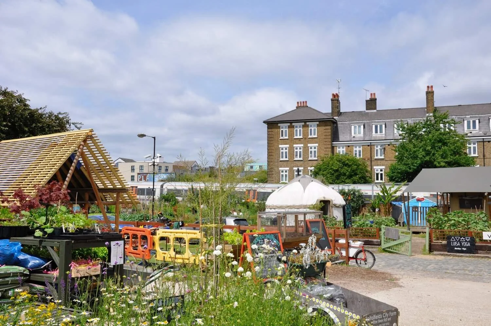
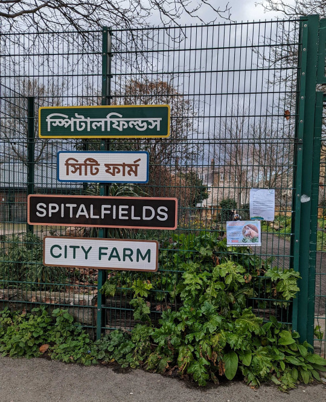
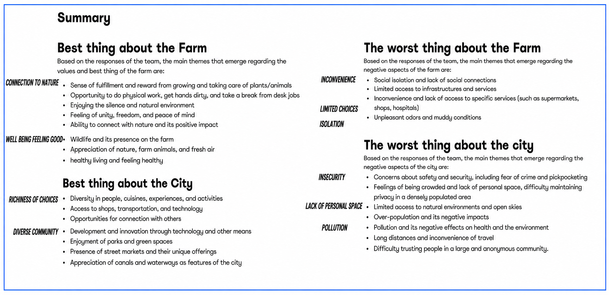
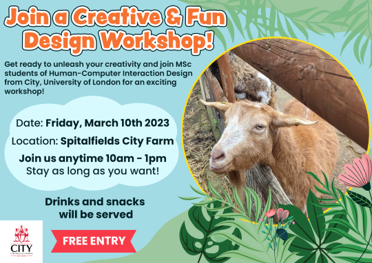
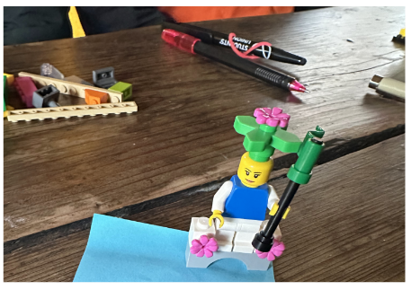
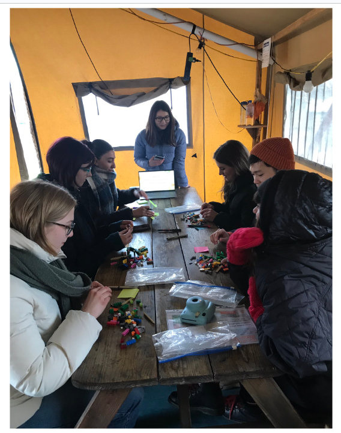
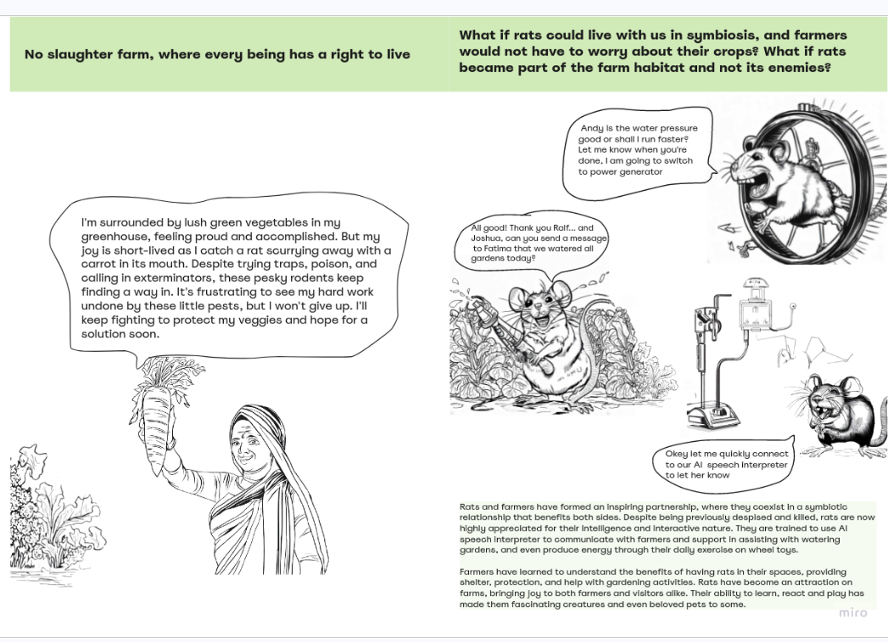
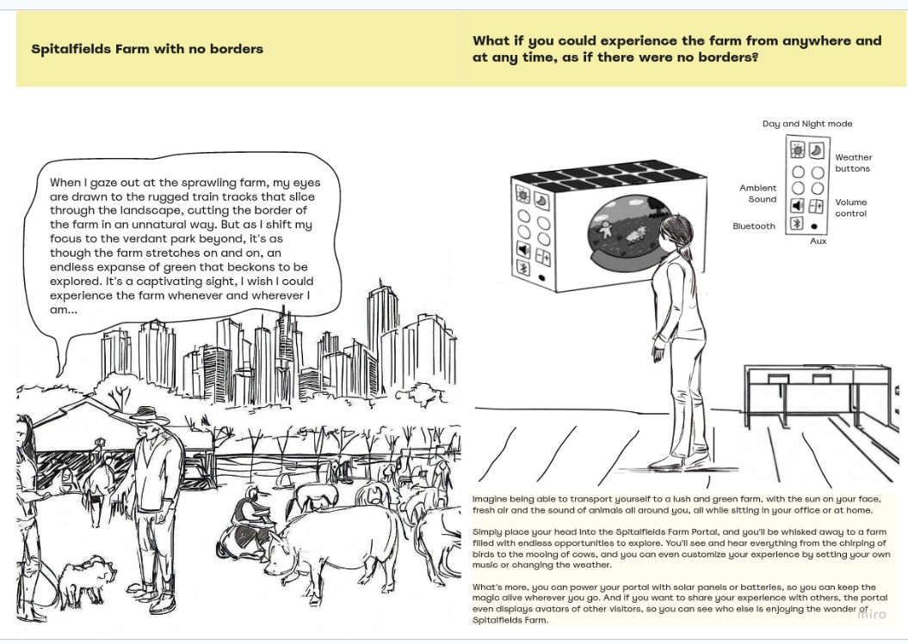
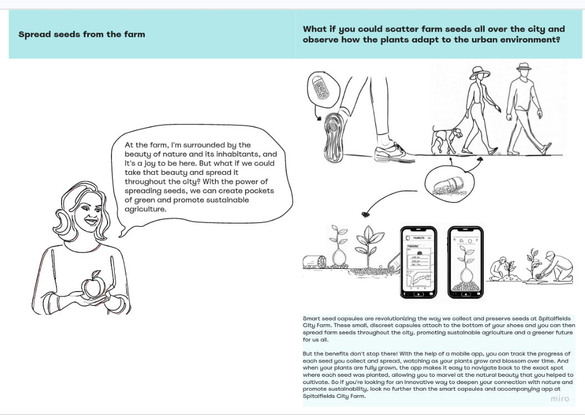
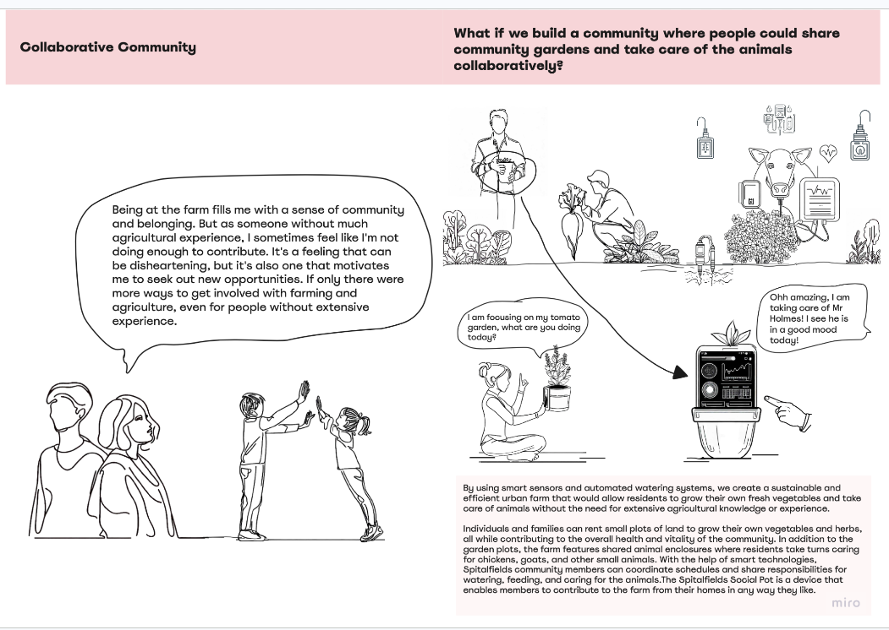

The Magical Farm Workshop
A participatory design project exploring community values and visions for Spitalfields City Farm, using Lego Serious Play to surface insights that traditional research methods often miss.

Overview
Spitalfields City Farm is one of 12 city farms in London. Created in 1978 on land bombed during World War 2, it has been a community space for over four decades. Owned by Tower Hamlets Council, the farm operates as a registered charity, a community space before it is a farm, serving a richly diverse local population including a significant Bangladeshi community.
Our brief was to explore the community's relationship with the farm, not to solve problems, but to understand values, hopes, and lived experiences. This required resisting the pull toward solutions and embracing a more open, participatory way of doing research.
The challenge
The farm faced real pressures: £35,000 per month to maintain, a 25-year lease with 9 years remaining, and difficulty converting casual visitors into engaged community members. But our research goal was intentionally not about solving these problems.
We chose to focus on aspiration rather than complaint, deliberately avoiding pain-point framing after seeing prior work where problem-focused prompts generated only negative and pessimistic views from participants. We hoped to generate richer, more generative data about the community's relationship with the space.
Research process





Workshop script
The final script opened with five ground rules, refined after the pilot to set a comfortable, judgment-free tone before anyone picked up a brick.
Warm-up
"What does nature mean to you?" — a low-stakes prompt to get everyone comfortable building with Lego before moving into farm-specific tasks.
Task 1
Build something that represents your relationship with Spitalfields City Farm: a memory, a feeling, or a value the farm holds for you.
Task 2
Build a vision for what you'd want the farm to become, or keep being, in the future.
Task 3
Place your artefacts on a map of the farm, showing where your ideas would "live" and why, then talk through your choices with the group.
Key findings
Emergent collaboration among farm staff
The most significant finding came from the farm staff session. Unlike other groups who built independently, the three staff members began connecting their Lego pieces together, creating a shared structure without being prompted. This demonstrated the depth of connection they felt with each other and with the farm, and revealed something about the social fabric of the community that no interview question could have directly surfaced.
Outsiders as a data source
The Belgian tourists, who had come to the farm specifically to see the donkeys after finding it on social media, provided an unexpected lens. Their participation offered insights into why people choose Spitalfields Farm over other London farms, a question relevant to the farm's visibility and appeal.
Silence as a feature, not a bug
The making-based nature of the workshop meant that silence was appropriate and comfortable for participants. This contrasts with interview-based research where silence can feel awkward or signal disengagement. Because everyone built independently, each artefact was unique, preventing social influence on responses even when participants were working simultaneously.
FarmVoice: photographs as another way in
The parallel Photo Voice (FarmVoice) workshop asked participants to submit photos answering prompts like "what the farm means to you" and "something that sparks joy." Responses converged on themes of family, community, and belonging, with one participant describing the farm as "this smooth fusion of city and farm," reinforcing what we were seeing independently in the Lego Serious Play sessions.
From research to proposals
Insights from both workshops fed into four speculative concepts presented at the final showcase, each exploring a different way technology could deepen the community's relationship with the farm without losing its human, hands-on character.

Tycoon Rats Farm
A playful concept built around an AI speech interpreter that lets farmers and the farm's resident rats "negotiate" shared space, reframing a usual nuisance as a relationship worth designing for rather than against.

Spitalfields Farm Portal
A sensory connected box that streams sound, smell, and live video from the farm into community spaces, so people who can't visit in person can still feel part of it.

Smart Seeds Capsule
A shoe-attached capsule and companion app that scatters wildflower seeds as people walk through the city, turning everyday movement into small acts of urban rewilding.

Spitalfields Social Pot
An IoT-enabled community garden and animal care system, illustrated through "Mr. Holmes" the pig, whose health and wellbeing could be monitored and shared with the volunteers who care for him.
What I learned
I chose to facilitate the workshop to overcome a fear of public speaking. Across four rounds I improved significantly, though I noticed tendencies to remain standing and tense rather than being calm and present. Being corrected by teammates in the moment, while uncomfortable, was genuinely useful. Facilitation is a skill that only improves through practice.
The framing of research goals shapes the quality of data. By choosing not to focus on pain points, we got generative and aspirational insights. The decision to use a making-based method allowed people who wouldn't have spoken freely in an interview to participate meaningfully.
The parallel workshop group spent too long with tourists and couldn't include farm staff, a missed opportunity. This underscored the importance of aligning on participant criteria before going into the field, and the value of pilot testing for time management as well as task design.
Coming from a Computer Science and AI background, I was trained to identify problems and immediately propose solutions. This project actively pushed against that instinct. Learning to sit with open-ended exploration, without jumping to "what should we build?", was one of the most intellectually challenging and rewarding aspects of the work.